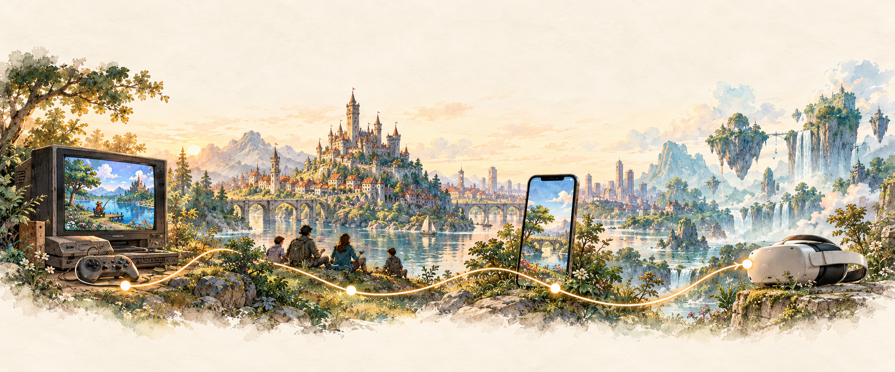

KEESEOK JEONG / A PROFESSIONAL CHRONICLE · SINCE AUG 1996
시간을 따라,
세계를 만들다.
Console · Online · Mobile · XR
1996년 8월, 작은 시작에서.
게임과 인터랙티브한 세계를 만들어 온 여정.

THE CAREER ATLAS · 1996 — 2024
하나의 길, 여러 개의 세계.
회사는 하나의 장으로,
프로젝트는 그 안의 이야기로. 눌러서 펼쳐보세요.
지도를 펼치고 있습니다…
이야기는 다음 장으로 이어집니다.
2024년 4월 이후의 경력은 확인 후 추가합니다.학력
세계를 만드는 기초.
수상
THE PERSON BEHIND THE STORY
AI와 함께, 호기심을 창작으로.
Keeseok Jeong
그동안 쌓아온 기술
CONTACT / THE NEXT CHAPTER
다음 이야기가 만나는 곳.
프로젝트와 새로운 이야기를 나눠주세요.